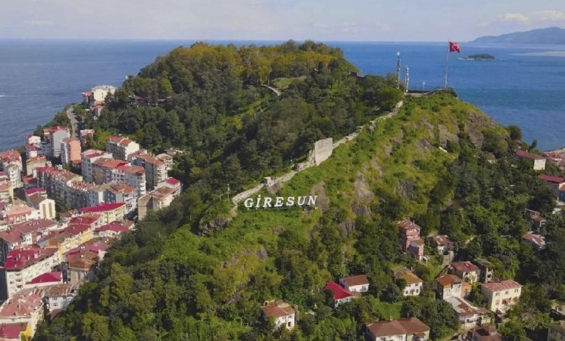
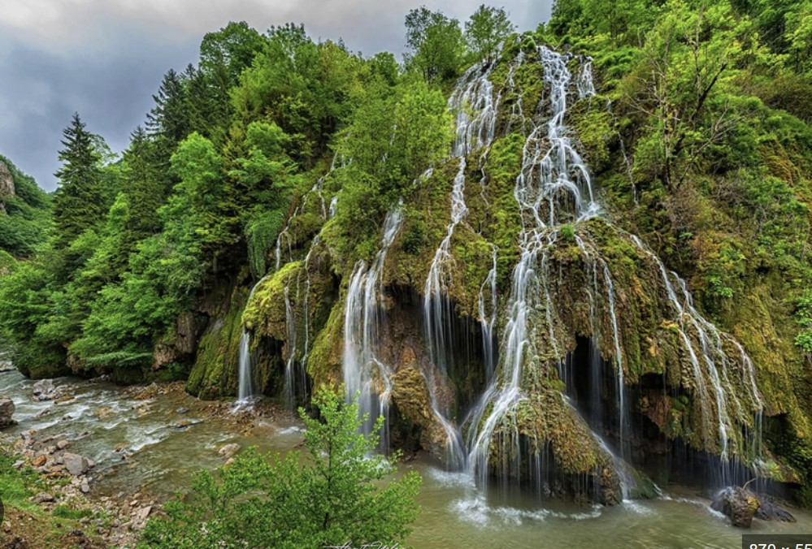
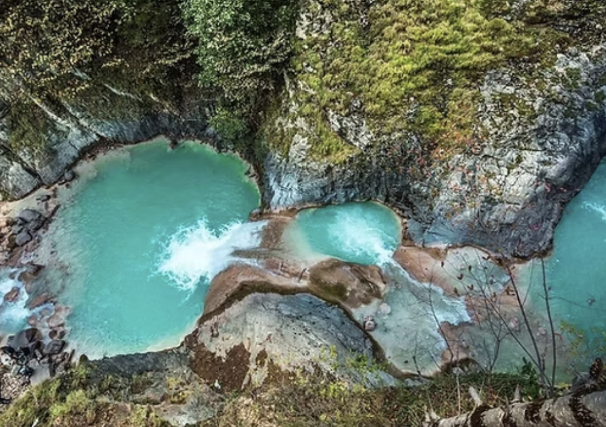
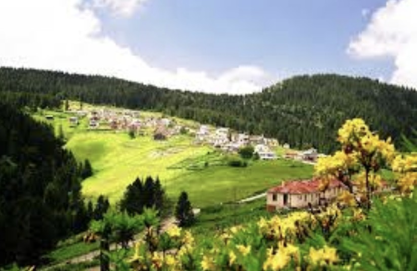
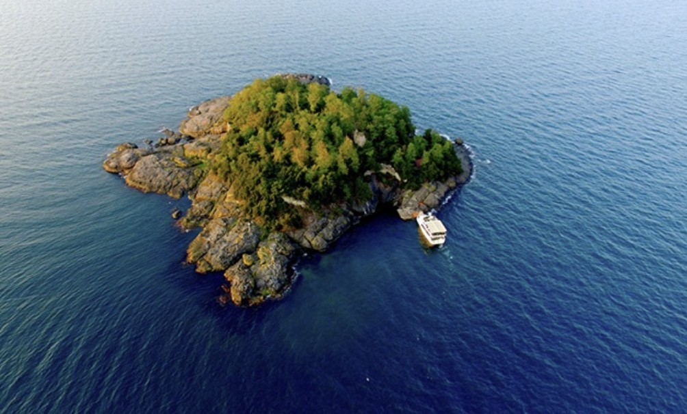

Gezilecek Yerler
Doğanın ve tarihin saklı kalmış hazineleri.

Giresun Kalesi
Şehrin merkezinde yükselen kale, Pontus Krallığı'ndan günümüze miras kalan bir kaledir. Zirvesinde Topal Osman Ağa'nın anıt mezarı bulunur. Şehri 360 derece izlemek isteyenler için eşsiz bir seyir noktasıdır.

Kuzalan Şelalesi
Yaklaşık 20 metre yükseklikten dökülen bu doğa harikası, çevresindeki zengin bitki örtüsü ve traverten oluşumlarıyla bilinir. Doğa yürüyüşü ve fotoğrafçılık için Karadeniz'in en kıymetli rotalarından biridir.

Mavi Göl
Sodalı suyun kireç taşlarıyla buluşmasıyla oluşan turkuaz rengi, burayı "Karadeniz'in Nazar Boncuğu" yapar. Özellikle güneşli günlerde büyüleyici bir cam göbeği rengine bürünür.

Kulakkaya Yaylası
1500 metre rakımda yer alan yayla, ulaşımı en kolay ve en huzurlu duraklardan biridir. Geniş düzlükleri, tarihi taş köprüsü ve tertemiz havasıyla tam bir dinlenme merkezidir.

Giresun Adası
Karadeniz'in yaşanabilir tek adasıdır. Amazon kadınlarının efsanelerine konu olan bu gizemli ada, tarihi kalıntıları ve kuş türleriyle Giresun'un simgelerinden biridir.